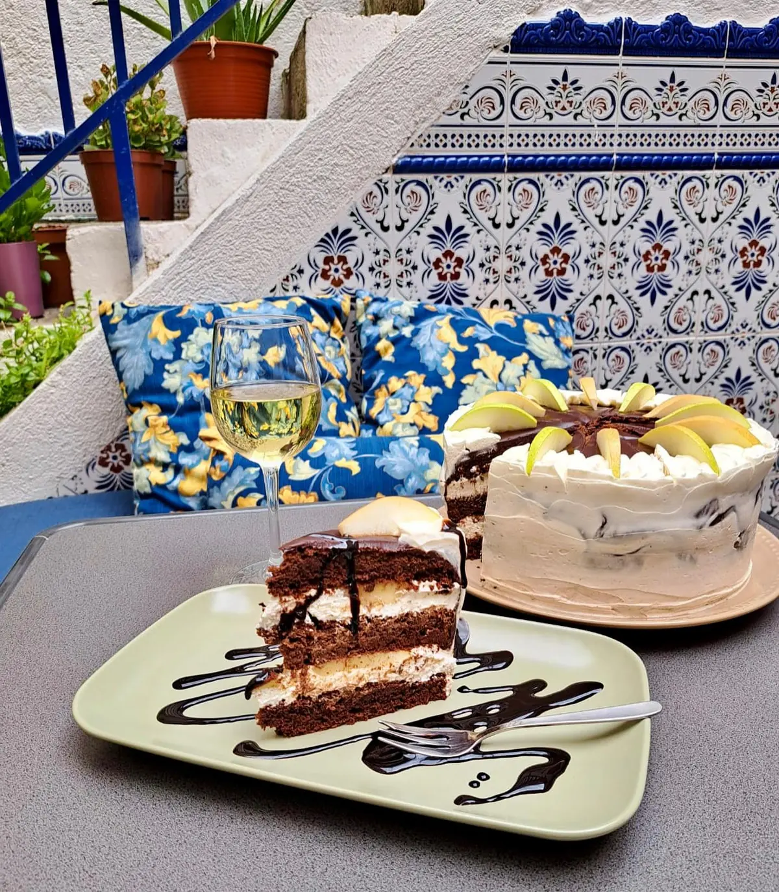
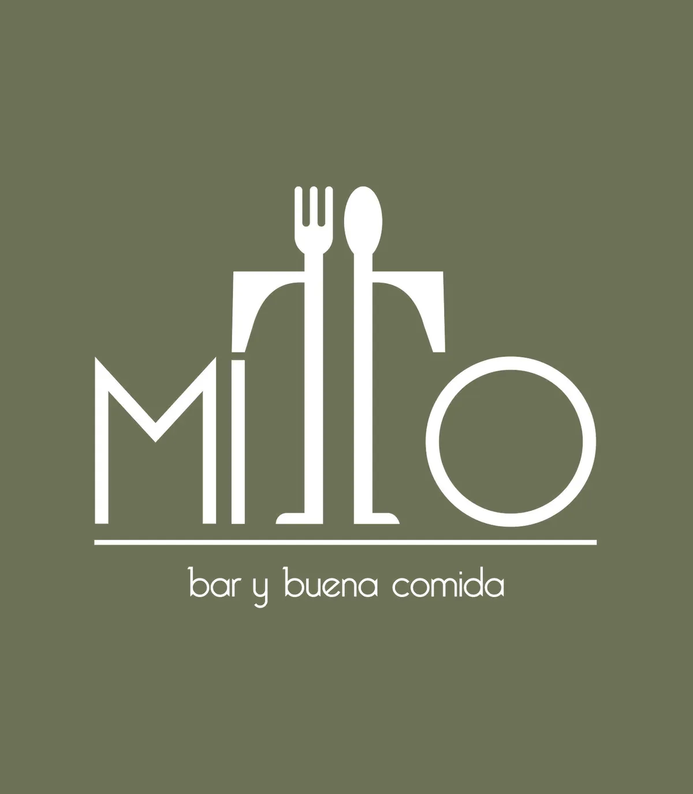
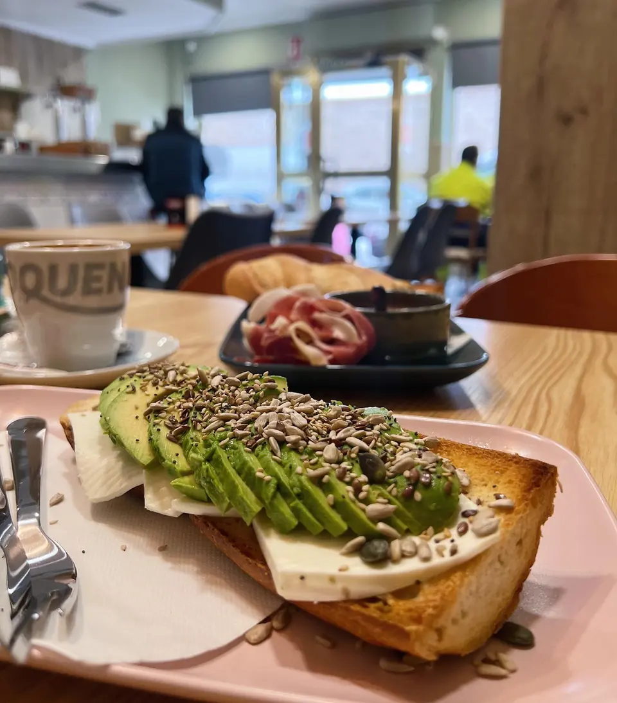
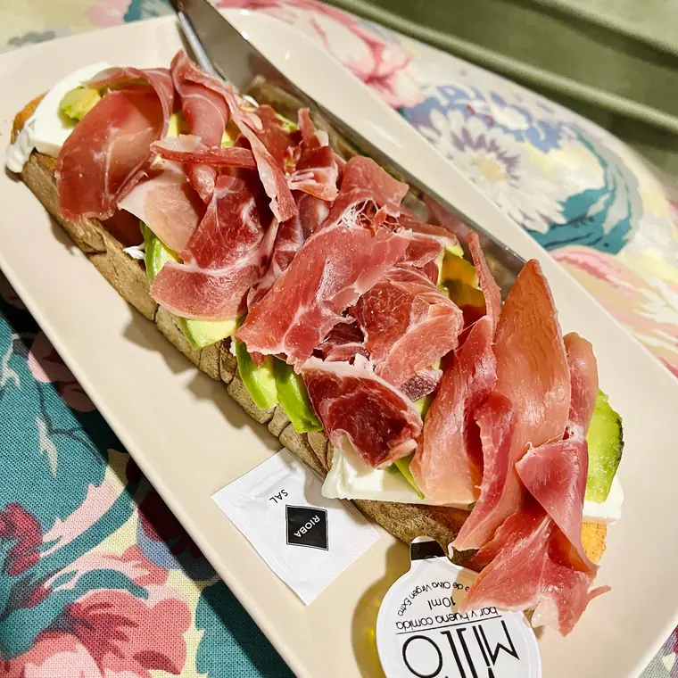
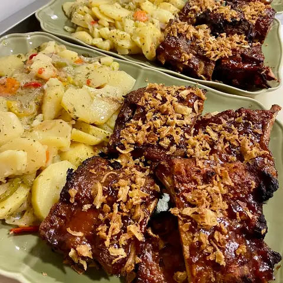
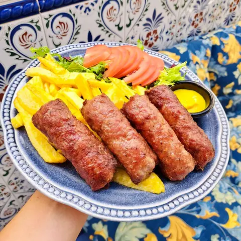
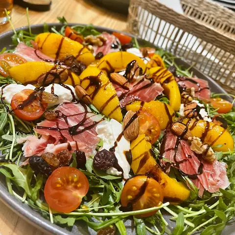
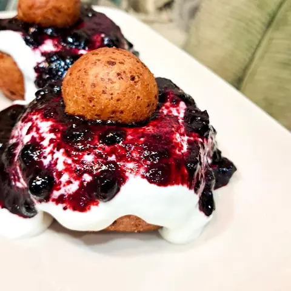
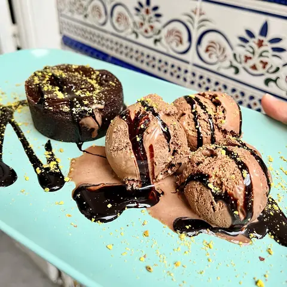
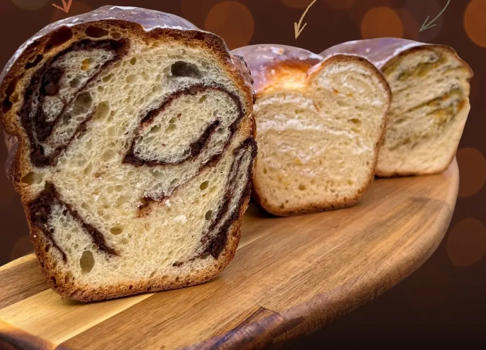

Desayunos, comidas y tartas de la casa. Y dentro, un patio que no se ve desde la calle.
Bar y buena comida en la calle Río Guadiana, 9, Parla. Desayunos dulces y salados, raciones, cocina casera y repostería propia por encargo.
Todos los días · 600 89 87 51


Cerrada: el logo de Mitto sobre su verde oliva.
Tarta de chocolate con crema de chocolate blanco y peras en almíbar, en el patio (foto de nuestro Instagram, 2023).
- Tostada con aguacate
- Desayuno americano
- Costillas BBQ
- Fingers de pollo
- Tiramisú de pistacho
- Tarta Napoleón
- Papanași
- Cozonac por encargo
- Bar y buena comida
Desayunos, dulces y salados
Dulce, salado y opciones ligeras, preparados al momento.
- Tostada crujiente con tomate, jamón serrano, atún, mermelada o mantequilla
- Tostada con aguacate
- Tostada completa con queso, aguacate y jamón
- Croissant caliente
- Tortilla francesa con bacon y queso
- Sándwich
- Desayuno americano: huevos, bacon y pancakes


La carta
Cocina casera, raciones y ensaladas.
Todavía no tenemos la carta con precios en la web. Pregunta en la barra o llámanos al 600 89 87 51.
Pregunta por la carta en la barra o llámanos al 600 89 87 51.
Desayunos
Tostada crujiente
A elegir: tomate, jamón serrano, atún, mermelada o mantequilla.
Tostada con aguacate
Tostada completa
Con queso, aguacate y jamón.
Croissant caliente
Tortilla francesa
Con bacon y queso.
Sándwich
Desayuno americano
Huevos, bacon y pancakes.
Café Oquendo
Zumo natural
Precio: pregúntanos.
Raciones y platos
Costillas BBQ
Con patatas panaderas al horno.
Oreja con torreznos
Fingers de pollo
Gambas al ajillo
Pulpo a la gallega
Sepia a la plancha
Boquerones
Solomillo
A la plancha o en salsa de champiñones.
Codillo con patatas
Brochetas de carne con patata asada
Mici
Precio: pregúntanos.


Ensaladas
Ensalada Mitto
Rúcula, burrata, jamón, melocotón frito, frutos secos y vinagre balsámico.
Super Ensalada
Hojas verdes, pollo, cebolla, maíz, aguacate, tomate, semillas, miel y mostaza.
Ensalada de pollo
Caprese
Tomate, mozzarella, aceite y vinagre balsámico.
Precio: pregúntanos.

Hamburguesas, pizzas y bocadillos
Hamburguesa de pollo
Hamburguesa de pulled pork
Pizzas
De atún, pepperoni o mortadela.
Sándwich con carne
Bocadillo de carne
Sándwiches
Mixto, cubano o vegetal.
Precio: pregúntanos.
Postres
Tiramisú de pistacho
Tarta de zanahoria
Tarta de queso
Papanași
Coulant de chocolate
Con helado.
Precio: pregúntanos.


Los platos cambian: lo que hay hoy, en la barra.
¿Alergias o intolerancias? Pregúntanos antes de pedir.
Tartas de la casa
Repostería propia, hecha en Mitto. Más tartas en @mitto.bakery.

Por encargo
Se encargan por teléfono, por Instagram o en el bar.
En Navidad y Semana Santa hacemos cozonac, pască, mucenici y cajas de pastelitos: pregúntanos qué hay.
El patio
Nuestra terraza está dentro.
«nada de eso se intuye en la puerta»
«un patio que yo lo llamo "patio andaluz"»
Como en casa
4,7 en Google · 178 reseñas
Lo que más sale en las reseñas: el patio, los desayunos, las raciones y los postres caseros.
Leer las reseñas en Google★★★★★
«Sin duda las mejores costillas de cerdo que he comido en Parla, los fingers de pollo están espectaculares!!!»
★★★★★
«El tiramisú de pistacho me alucina.»
★★★★★
«las patatas fritas no son congeladas, cosa que se agradece en un bar»
★★★★★
«He pedido el bocadillo de carne y está espectacular, con un pan casero buenísimo. […]»
★★★★★
«Desayunos buenísimos! tanto el dulce como el salado»
★★★★★
«todo es casero y la comida te la preparan al momento»
★★★★★
«Las tartas las mejores»
★★★★★
«El espacio es precioso, estuvimos en el patio interior que hay y se estaba super bien.»
Desliza la tarjeta a un lado para ver la siguiente.
Abrimos todos los días
Llámanos · 600 89 87 51
Viernes y sábado, hasta la 1:30 de la madrugada. En festivos, mejor llama al 600 89 87 51.
- Lunes
- 8:00 a 22:00
- Martes
- 8:00 a 22:00
- Miércoles
- 8:00 a 23:30
- Jueves
- 8:00 a 23:30
- Viernes
- 8:00 a 1:30
- Sábado
- 9:00 a 1:30
- Domingo
- 9:00 a 22:00
Dónde estamos
Busca el logo del tenedor y la cuchara en la fachada.
C. Río Guadiana, 9
28981 Parla (Madrid)
- Teléfono
- 600 89 87 51
- Para llevar
- Sí. A domicilio, no.
- El patio
- Es nuestra terraza, dentro del local.
- Accesible
- Entrada para silla de ruedas, según Google.
El mapa es de Google Maps: solo se carga si lo pides, y entonces Google puede guardar sus propias cookies.
Preguntas
¿No está aquí lo que buscas? Llámanos al 600 89 87 51.
¿Tenéis carta con precios?
Todavía no en la web. Pregunta en la barra o llámanos al 600 89 87 51 y te decimos lo que hay hoy.
¿Cómo encargo una tarta?
Por teléfono, en el 600 89 87 51; por Instagram, en @mitto_bar; o en el bar.
¿Se puede comer en el patio?
Sí: el patio interior es nuestra terraza.
¿Hacéis reparto a domicilio?
No. Para llevar, sí.
¿Puedo reservar mesa?
Llámanos al 600 89 87 51.
¿Tenéis en cuenta las alergias?
Pregúntanos antes de pedir y te decimos qué lleva cada plato.
¿Abrís en festivos?
Llámanos para confirmarlo: 600 89 87 51.
¿Nos vemos en el patio?
Desayunos, comidas y tartas en la calle Río Guadiana, 9.
C. Río Guadiana, 9 · Parla